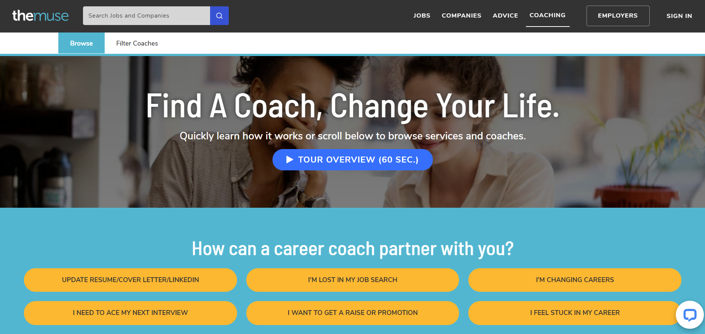
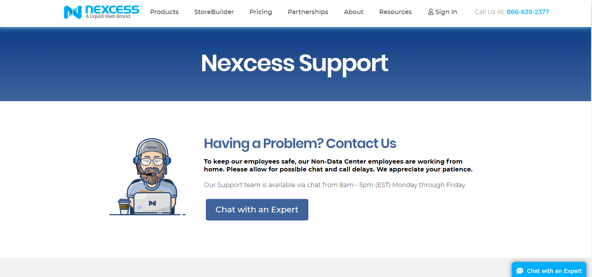
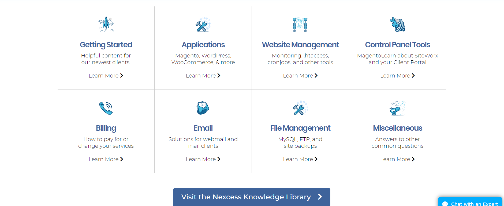
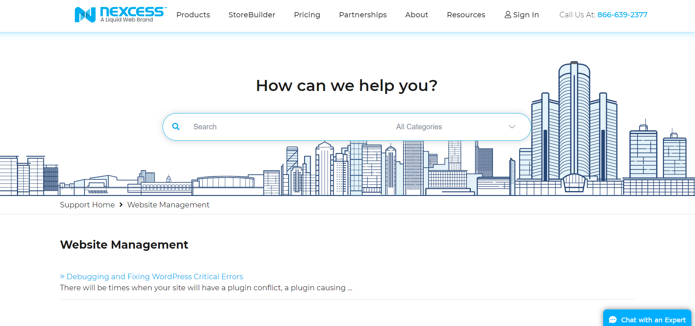
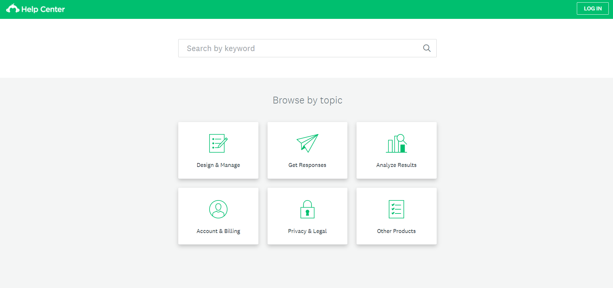
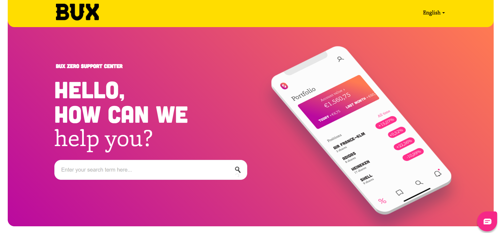
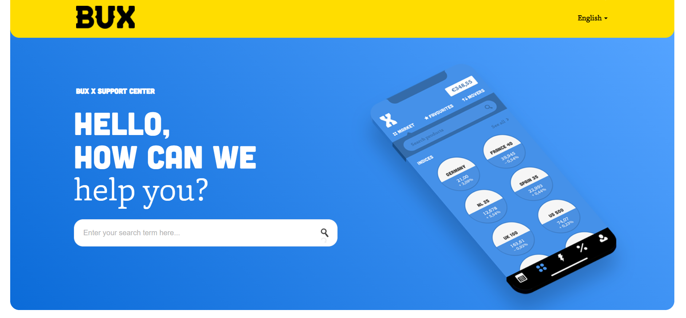
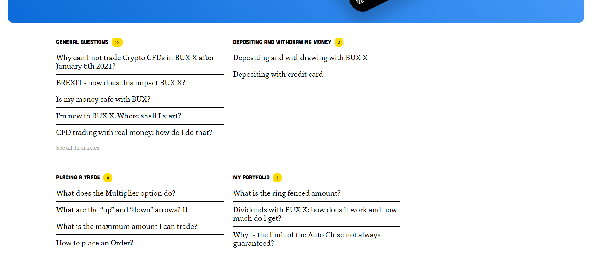
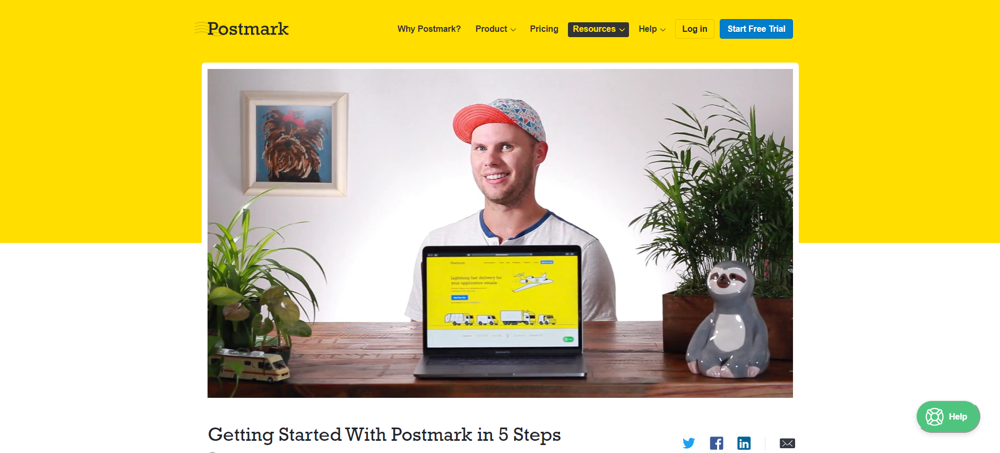

If you are in the process of creating an easy-to-navigate, visually enticing, and rich knowledge base or a resource library for your team or want to help your website visitors find what they need easily and quickly, you’re probably considering adding visual content.
Data visualization is crucial when you need to relay large portions of information simply and quickly. Simple data visualization is one of the design trends for 2021. But how do you simplify a knowledge base with graphic design?
In this article, we’ll show you five successful data visualization examples found online, and explain what makes them so successful.
Quiz-style interactive scheme
If your company offers multiple services and products, and a slight nuance can make a big difference between those services, a self-guided interactive quiz will help your visitors tremendously.
For example, The Muse, a job search, coaching, and employer branding platform, helps visitors on their Coaching page find exactly what they are looking for.

The Muse Coaching interface is clear and concise.
Starting from the exact goal you want to achieve, you can navigate your way to finding the perfect coach for different criteria such as your seniority, budget, work experience, career stage, and industry.
This knowledge base combines the work of writing, graphic design, UX design, coding, and marketing masterminds. It takes a lot more than just adding a nice photo or illustration to make it work so seamlessly and effectively. It needs a well-designed and intuitive user interface and a specific and comprehensive filtering system.
But if you have access to a good tech team and UX designer, a comprehensive knowledge base like this is worth considering. And if your knowledge base functions on a system and user base that your marketers and sales teams know in detail, their feedback would be crucial in creating the best outcome.
Because when a knowledge base is so well designed that it offers value to everyone, it can become an effective lead magnet from a marketing perspective.
Simple illustrations
Knowledge bases are usually overly saturated with information. The amount of text and submenus can create a sense of panic, leading to readers bouncing off the page.
Adding graphic design, especially effective ones between vast portions of text, can help the page visitor to “get a break” and also understand more about the subject matter they are reading.
A knowledge base that looks well designed uses illustrations perfectly. An example is Nexcess. Right from the beginning, this helpful guy greets you.

Nexcess makes you feel supported along your search for assistance.
The design looks clean, sleek, and precise. But, as you scroll down comes the confusion and plenty of choices in the Nexcess knowledge library.
However, these cute and futuristic illustrations in similar style and color palette help the eye rest so that it’s easier to skim through the chunks of text.

Never underestimate the power of simple icons to help guide the eye as shown in Nexcess’ knowledge library.
Additionally, every single subpage has an illustrated city skyline that beautifies the page and gives it some pizzazz.

A streamlined design on Nexcess’s website.
Illustrations are handy but can be expensive when made custom just for you. Luckily, there are some great sources for free illustrations in multiple styles and colors available online.
Icons
Illustrations are excellent for pacing the reception of your written content and beautifying the look of your knowledge base. But sometimes, they are hard to find if you’re on a budget and might be challenging to customize to a high level.
A great alternative is simple vector icons, which essentially are flat-style minimalist illustrations.
In this example, we can see Mailchimp’s knowledge base’s main menu. It seems barebones, but it is sufficient to easily navigate the sections and fill out the places where white space feels adequate.

Vector icons and bare text on Mailchimp’s Knowledge Base.
And the good thing about icons is that they aren’t tied to your branding and overall visual identity. There are plenty of places where you can buy them for an affordable price or have them ordered to be created specifically for your needs. You can even get them for free in icon libraries.
As such, you can start with a simple and straightforward solution with icons. In the future, when you are rebuilding and rebranding your knowledge base on a better budget, you can opt for custom illustrations or more.
Hero images
Most knowledge bases use graphic design to help readers focus on separate segments and submenus, as it helps a lot with navigation. However, people often forget that the quickest way to find what they are looking for is to use keywords and the always-helpful search bar.
Bux and Bux Zero’s help centers use a vividly colored and sleek hero image to draw attention towards the search bar. The design itself is excellent: a gradient, a techy color palette, overall a modern and detailed illustration.


Bux and BuxZero feature a great example of using a strong single image as an anchor.
But it is also genius in making you ask your questions first. And if you don’t find what you’re looking for, you can go ahead and find your article from the well-constructed and easy-to-skim menu.

Visual hierarchy comes in play with Bux’s neatly organized menu.
Video
Finally, we have a suggestion that is the hardest to produce, the most expensive of this selection, and the most useful: video.
It comes as no surprise that people prefer to receive information in the form of a video in an era of watching tutorials for even the simplest of things.
Some of its perks are that you can use them in promotional efforts and pack a lot of information into the video. But the challenges are that videos are harder to produce and make them true to your brand and as short as possible, so you’ll probably need professional production services.
However, you can use video to guide your users effectively through your services in detail, so it is worth the effort.
For example, Postmark has a video in which an employee explains in great detail the service, features, and best ways to use it. They include some cute animations, and the overall tone of voice is friendly and humorous.
Every chapter has a time mark so that you can go straight to the point. And the video also takes time to explain the help center where you can get further information that you couldn’t yet find.

Postmark’s video shows you how to get started in five simple steps
If no one feels comfortable being the star of your explanatory video, and you need to explain an app or service, record your screen when using it, add some animation and narration if required.
When we were doing our redesign at ManyPixels, we decided to create a beautiful video to explain how our service works.
Conclusion
Whether you’re on a budget and need an affordable solution to help structure your knowledge base with design, or you want to spend extra in creating detailed branding and a great user experience for your website’s visitors, there are ways to implement graphic design in it.
Start by compiling the information, sorting it into chapters, and then seeing what the layout requires most. And, of course, keep your budget in mind when creating your wish list.